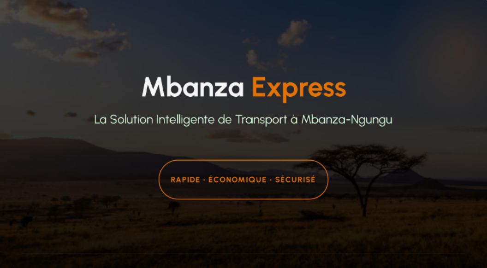
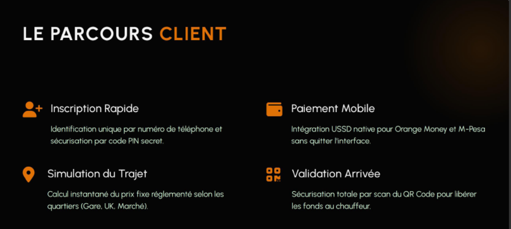
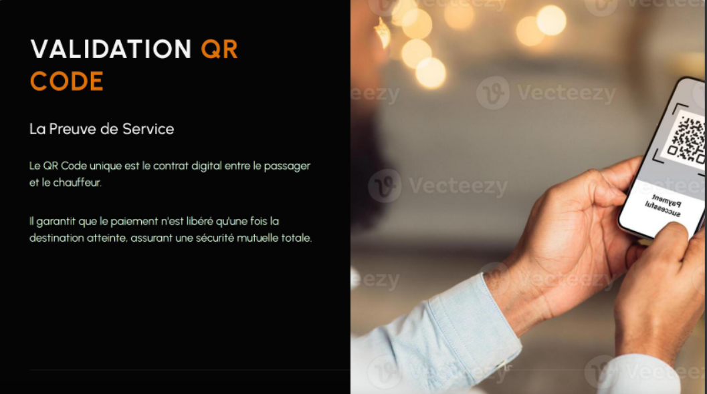
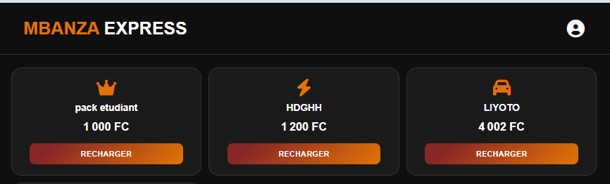
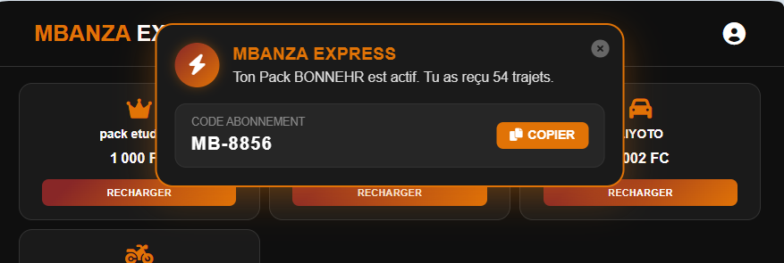
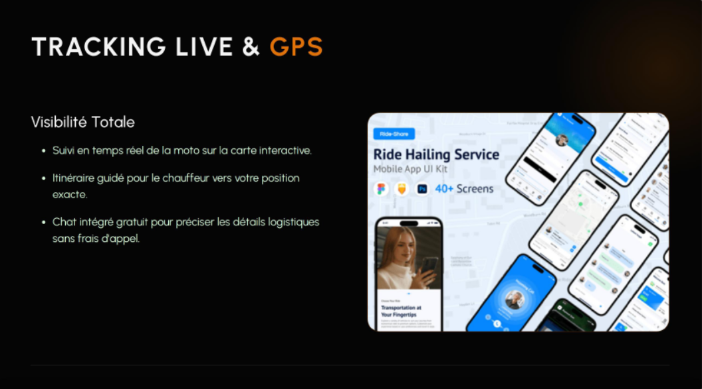
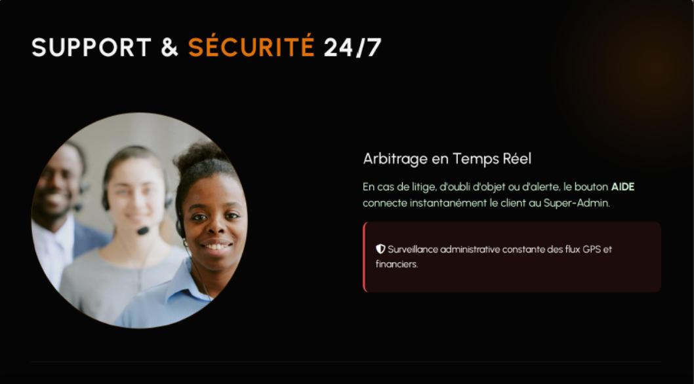
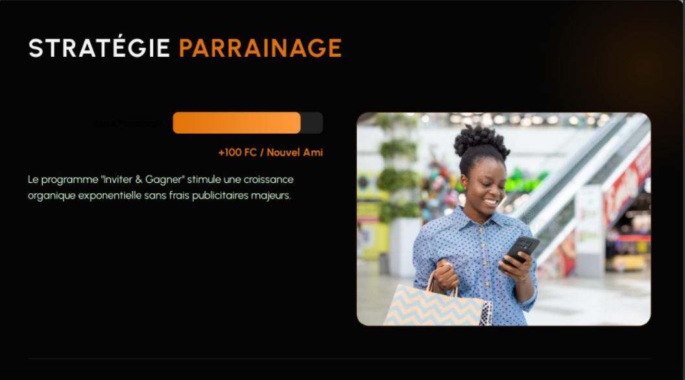

Guide officiel d'utilisation & règles de la plateforme

Pour utiliser les services de transport Mbanza Express, votre compte doit être configuré correctement :

Le système fonctionne de manière entièrement automatisée en 4 étapes simples :

Pour éviter de payer par Mobile Money à chaque trajet, Mbanza Express vous propose un système de forfait prépayé par abonnement, idéal pour les clients réguliers (étudiants, travailleurs).
Q : Comment fonctionne l'abonnement ?
R : Vous achetez un pack de trajets (ex: 10 courses) en cliquant sur le bouton offres, RECHARGER votre pack. faites le paiement directement p par ORANGE MONEY ou M.PESA etCode d'Abonnement Unique lié à votre numéro de téléphone vous sera attribué par notification.
Q : Comment fonctionne l'abonnement ?
R : Vous achetez un pack de trajets (ex: 10 courses) à l'avance auprès de la direction. Un Code d'Abonnement Unique lié à votre numéro de téléphone vous sera attribué.

Q : Comment utiliser mon code pour commander ?
R : Lors de votre commande, sur la page de paiement, sélectionnez l'option " Utiliser mon Abonnement" et entrez votre code secret abonnement. Si votre solde est suffisant, le trajet est déduit et votre QR Code de validation s'affiche instantanément en cliquant sur le code QR.
Q : Quel est l'avantage par rapport au Mobile Money ?
R : La validation est 100% instantanée. Même si les réseaux Orange Money ou M-Pesa dérangent ou tardent à Mbanza-Ngungu, votre code d'abonnement fonctionne directement sur notre base de données sans aucune attente.

Recherche de quartier : Ne vous souciez pas de savoir si le chauffeur connaît votre quartier. L'application intègre une carte GPS en direct. Dès qu'un chauffeur accepte votre course, l'itinéraire s'ouvre sur son écran pour le guider directement vers votre position exacte.

Le Chat Privé gratuit : Besoin de préciser un détail logistique ? Dès que la course est acceptée, cliquez sur le bouton "Chat". Un espace de discussion interne s'ouvre pour écrire directement au chauffeur (ex: "Je vous attends devant la pharmacie") sans dépenser vos unités téléphoniques.
En cas de problème (oubli d'un objet sur la moto, désaccord avec un chauffeur ou panne technique), cliquez immédiatement sur le bouton Aide disponible sur votre écran.

| Règles d'utilisation | Sanctions / Conséquences |
|---|---|
| Commandes fictives ou fausses adresses répétées | Blocage temporaire ou définitif du compte client. |
| Manque de respect ou comportement dangereux envers un chauffeur | Signalement immédiat dans le système et exclusion définitive. |
